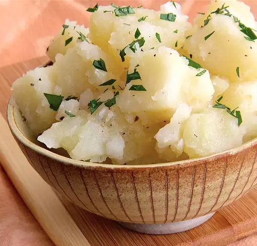

Grammy's German Potato Salad

Description
This is a different potato salad for those who don't want a mayonnaise-based recipe. My family has enjoyed this for many years, and it is easy to adapt by adding more spices that suit your family.
Ingredients
Find below the list of ingredients
- 8 white potatoes, peeled and cut into cubes
- 1 large onion, chopped
- 2 teaspoons white sugar
- ½ teaspoon dry mustard
- ½ teaspoon salt
- ¼ cup cider vinegar, divided
- 1 pinch ground black pepper
- ¼ cup vegetable oil
Preparation Steps
-
Place potatoes into a large pot and cover with salted water; bring to a boil. Reduce heat to medium-low and simmer until just tender, about 15 minutes; drain.
-
Put potatoes into a large bowl; add onion and stir.
-
Mix sugar, mustard, and salt together in a bowl. Stir just enough vinegar into the sugar mixture to form a paste; season with black pepper.
-
Whisk remaining vinegar and vegetable oil together in a separate bowl until smooth; stream into bowl with the paste, whisking continually to incorporate. Pour the dressing over the potato and onion mixture.
-
Cover the bowl with plastic wrap and let salad cool slightly, 5 to 10 minutes.